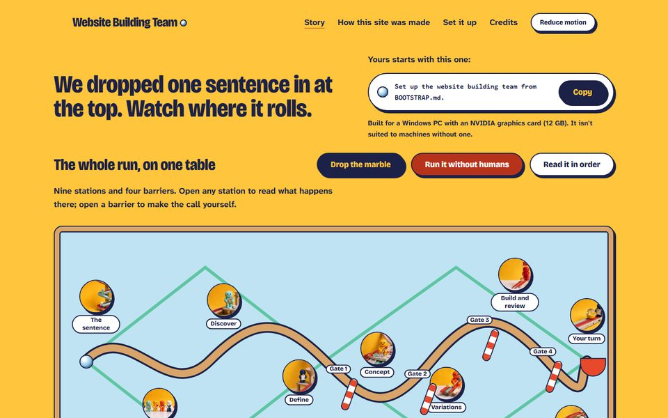
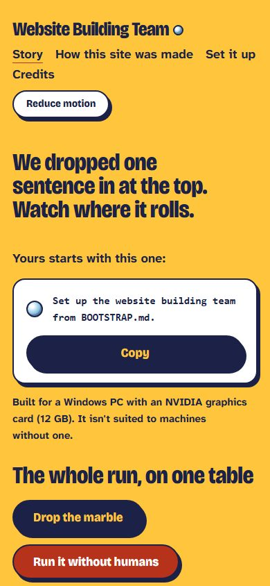
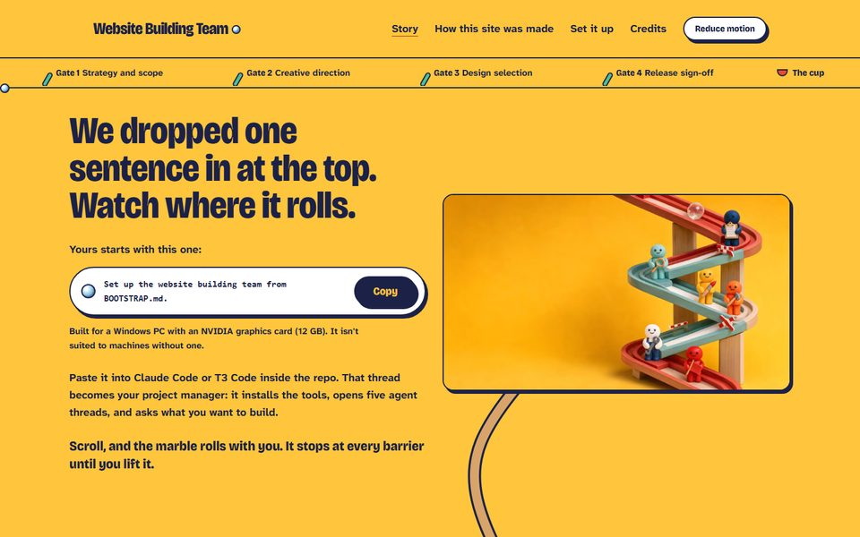
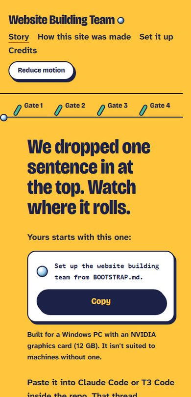
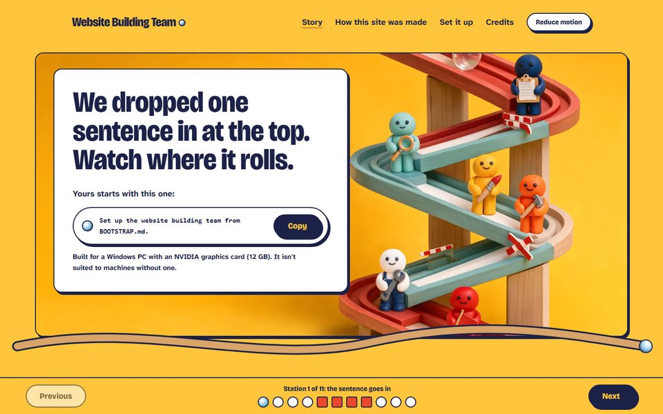
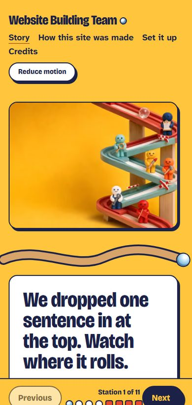

First screens at 1440 and 390 px. Bar: weighted 7.0, no axis below 6. Full evidence: ../../screenshots/g3/contact-sheet.html


Whole run on one tabletop: drop the marble, open any station, lift the barriers.
Strength: Most original; first screen is the explanation. Perf 96, axe 0.
Weakness: Thinner story; small portholes; 390 label collision.
Design / Creativity / Story / Polish / Usability: 8 / 9 / 7 / 7 / 8 · live at localhost:4323


One continuous track down a long page; the marble waits at each barrier.
Strength: Deepest story: gate cards, the "second opinion" exchange.
Weakness: 25,000 px tall; 5.4 s blocking on mobile; overflows at 390.
Design / Creativity / Story / Polish / Usability: 8 / 7 / 8 / 6 / 6 · live at localhost:4321


A full-screen scene per station; Next locked until you lift the barrier.
Strength: Most cinematic single frames.
Weakness: Slide-deck feel; slow first image; tiny dots.
Design / Creativity / Story / Polish / Usability: 8 / 6 / 7 / 7 / 5 · live at localhost:4322